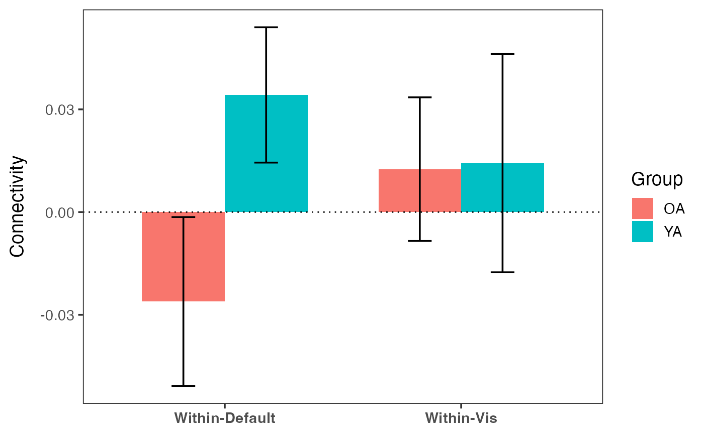
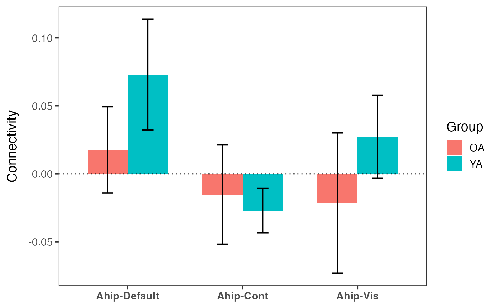
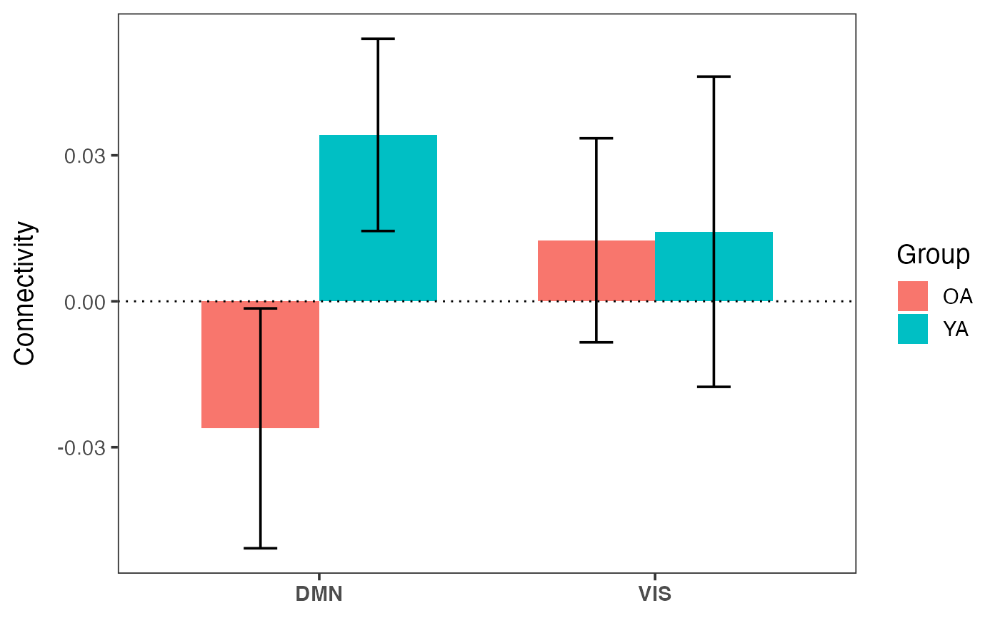

Plot group comparison bar chart
plot_compare.RdGenerate grouped bar plots with error bars for comparing connectivity metrics between groups.
Usage
plot_compare(
data,
conn_vars,
group,
error_bar = c("se", "sd", "ci", "none"),
show_zero = TRUE,
clean_labels = TRUE,
title = NULL
)Arguments
- data
Data frame with one row per subject containing connectivity values and a grouping column
- conn_vars
Character vector of column names in
datato compare. Each becomes a category on the x-axis- group
Character string naming the grouping column in
data. Must be a factor or character column with 2 or more levels- error_bar
Character. Type of error bar to display. One of:
"se"(default): standard error of the mean"sd": standard deviation"ci": 95 percent confidence interval"none": no error bars
- show_zero
Logical. If TRUE (default), draw a dotted horizontal reference line at y = 0
- clean_labels
Logical. If TRUE (default), clean column names for x-axis display by replacing underscores with hyphens and applying title case. If FALSE, use raw column names
- title
Optional character string for the plot title
Details
The function computes per-group summary statistics (mean and error bars) from the input data frame, then generates a grouped bar plot with one cluster per connectivity variable.
The function works with any column names, not limited to calc_*
output. Any numeric columns in the data frame can be used as
conn_vars.
X-axis labels can always be overridden with
+ scale_x_discrete(labels = ...) regardless of the
clean_labels setting.
See also
plot_heatmap for connectivity matrix heatmaps.
plot_scatter for connectivity-behavior scatter plots.
calc_within, calc_between,
calc_conn for generating connectivity data.
Examples
# Within-network comparison by group
indices <- get_indices(ex_conn_array, roi_include = "schaefer")
within_df <- calc_within(ex_conn_array, indices)
within_df$group <- rep(c("YA", "OA"), times = c(5, 5))
plot_compare(within_df,
conn_vars = c("within_default", "within_vis"),
group = "group"
)

# ROI-to-network comparison
indices_all <- get_indices(ex_conn_array)
ahip_df <- calc_conn(ex_conn_array, indices_all,
from = "ahip", to = c("default", "cont", "vis")
)
ahip_df$group <- rep(c("YA", "OA"), times = c(5, 5))
plot_compare(ahip_df,
conn_vars = c("ahip_default", "ahip_cont", "ahip_vis"),
group = "group"
)

# Custom labels override clean_labels
plot_compare(within_df,
conn_vars = c("within_default", "within_vis"),
group = "group"
) + ggplot2::scale_x_discrete(labels = c("DMN", "VIS"))
#> Scale for x is already present.
#> Adding another scale for x, which will replace the existing scale.

if (FALSE) { # \dontrun{
# Full workflow with real data
z_mat <- load_matrices("data/conn.mat", type = "zmat", exclude = c(46, 57))
indices <- get_indices(z_mat, roi_include = "schaefer")
within_df <- calc_within(z_mat, indices)
within_df$group <- demo$group
plot_compare(within_df,
conn_vars = c("within_default", "within_cont", "within_vis"),
group = "group",
title = "Within-Network Connectivity by Age Group"
)
} # }